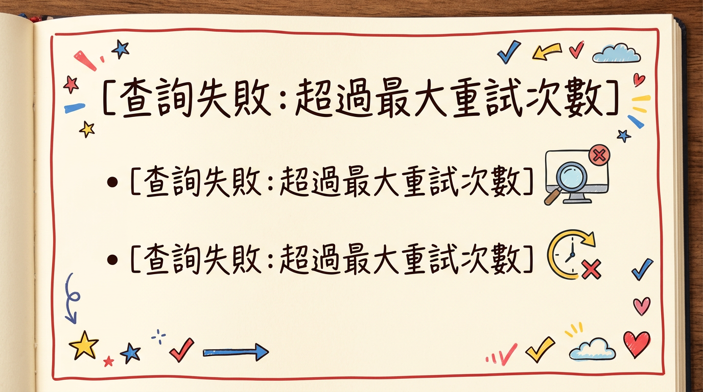
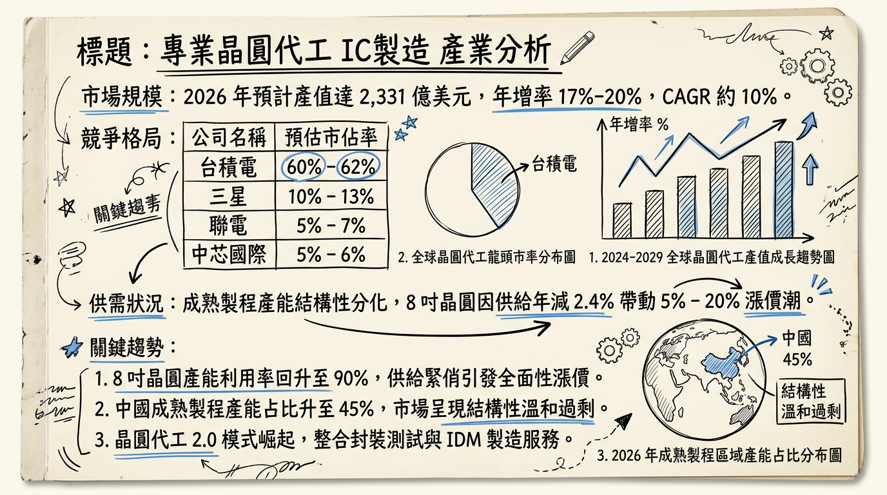
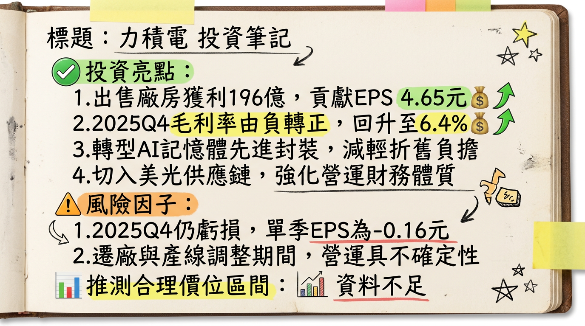

6770 力積電 (PSMC) 深度研究報告
一句話摘要
從「產能過剩」轉向「資產輕量化」：力積電透過售廠美光獲取鉅額處分利益，並藉由 3D AI Foundry 與 HBM 後段代工開啟 2026 年獲利結構性轉折。
公司概覽
力積電（PSMC）為全球前十大晶圓代工廠，是少數同時具備邏輯 IC 與記憶體製造技術的晶圓代工廠。
業務與營收結構 (2025 Q4/2026 預估)
| 業務類別 | 營收佔比 | 核心產品 / 應用 |
|---|
| 邏輯代工 (Logic) | 60% - 65% | PMIC (21%)、HV 驅動 IC (17%)、MOSFET/IGBT (16%) |
| 記憶體代工 (Memory) | 30% - 35% | 利基型 DRAM (27%)、NAND/NOR Flash (6%) |
| 3D AI Foundry | ~3% | 矽中介層 (Silicon Interposer)、3D 晶圓堆疊 (WoW) |
核心競爭優勢
獨特技術堆疊： 全球唯一具備「邏輯 + 記憶體」整合代工能力的純代工廠，有利於 AI 運算所需的 WoW (Wafer-on-Wafer) 技術。
資產輕量化轉型： 透過將銅鑼 P5 廠售予美光，大幅降低每年的折舊費用負擔（預計 2026 年折舊年減 50%）。
FAB IP 輸出模式： 與印度塔塔集團（Tata）合作，採技術授權模式獲取權利金（累計已入帳 1.43 億美元），不需負擔海外建廠盈虧。
財務分析
月營收趨勢表格
| 月份 | 營收 (億新台幣) | 月增率 MoM | 年增率 YoY | 備註 |
|---|
| 2026/01 | 46.18 | +8.17% | +26.27% | 創 39 個月新高 |
| 2025/12 | 42.69 | ~+2% | +21.92% | |
| 2025/11 | 41.80 | ~+3.2% | - | 區間預估 |
| 2025/10 | 40.50 | ~+1.2% | - | 區間預估 |
| 2025/09 | 40.00 | ~+2.5% | - | 區間預估 |
季度數據與年度趨勢
- 2025 Q4 表現： 營收 124.95 億元（季增 6%），EPS -0.16 元（虧損較 Q3 的 -0.65 元顯著收斂）。
- 獲利轉折： 2025 全年營收 467.30 億元，EPS -1.86 元。法人預期 2026 年受惠於售廠利益（約 EPS 4.65~8 元）與本業轉盈，EPS 有望挑戰 8.0 - 11.0 元。
法說會重點 (2026/02/05)
報價調漲： 證實 12 吋代工於 1 月起漲價；8 吋產線因產能滿載，預計 3 月起全面調漲代工報價。
稼動率： 2025 Q4 產能利用率回升至 82%，其中記憶體產線接近滿載。
Guidance： 預期本業將於 2026 Q1 挑戰單季虧轉盈。
AI 進度： 4 層晶圓堆疊技術已獲一線大廠認證，2027 年將開始大規模貢獻。
券商觀點
主要券商目標價表格 (2026/02 更新)
| 券商名稱 | 評等 | 目標價 (NT$) | 2026 EPS 預估 | 報告日期 |
|---|
| 摩根士丹利 | 優於大盤 | 88.0 | - | 2026/02/06 |
| FactSet 調查中位數 | 中立/偏多 | 74.0 | 8.0 ~ 11.0 | 2026/02/07 |
| 鉅亨/Factset | 買進 | 77.0 | - | 2026/02/04 |
| 富邦證券 | 中立 | 60.0 | 1.11 (不含售廠) | 2026/02/06 |
財報深度分析
利潤率趨勢表格
| 季度 | 毛利率 | 營業利益率 | 稅後淨利率 | 備註 |
|---|
| 2025 Q4 | 6.36% | -5.76% | -5.23% | 毛利率由負轉正 |
| 2025 Q3 | -6.53% | -22.69% | -23.04% | 營運谷底 |
| 2025 Q2 | -9.06% | -15.04% | -29.56% | |
| 2025 Q1 | -4.82% | -7.72% | -9.87% | |
- 資本支出： 2025 年實際支出 3.41 億美元。預估 2026 年維持在 3-4 億美元，專注於 3D AI 特殊製程。
- 存貨分析： 2025 Q3 存貨周轉天數降至 64.24 天（YoY 減少 20 天），去庫存圓滿結束。
- 折舊壓力： 2026 年折舊費用預計降至 100-110 億元，年減幅達 50%。
股權異動與資本結構
申報轉讓： 2025/12 總經理朱憲國申報轉讓 500 張（個人財務規劃），仍持股 688 張。
股利政策： 2026/02 董事會決議 2025 下半年不分派股利（因全年淨損）。
負債比率： 截至 2025 Q3 為 53.94%，預計美光售廠資金 18 億美元入帳後將顯著下降至 40% 以下。
產業分析
全球晶圓代工市佔率 (2025 Q3)
| 排名 | 公司 | 市佔率 | 核心領域 |
|---|
| 1 | 台積電 | 71.0% | 先進製程 (2nm/3nm) |
| 2 | 三星 | 6.8% | 先進製程 / 記憶體 |
| 10 | 力積電 | 1.2% | 邏輯+記憶體代工 |
競爭對手對比
| 公司 | 2025 毛利率 | 2026 營運亮點 | 競爭局勢 |
|---|
| 力積電 | -3.0% (全年) | 售廠利益、HBM 代工 | 轉向特殊製程避開中國競爭 |
| 聯電 | ~32% | 矽光子佈局 | 成熟製程規模化領先 |
| 世界先進 | ~26% | 8 吋漲價受惠 | 受惠於驅動 IC 需求回溫 |
近期催化劑 (Catalysts)
*
2026/03： 8 吋晶圓代工報價全面調漲（預計 5%-20%）。
* 2026 H1： 銅鑼 P5 廠 18 億美元交割款入帳（EPS 挹注）。
* 2026 H2： 美光 HBM 後段晶圓製造（PWF）訂單開始小量驗證。
* 中國成熟製程產能持續開出，標準型產品毛利承壓。
* 地緣政治關稅風險影響設備進口成本。
⭐ 成長動能時間軸
- 2026 Q1： 12 吋邏輯代工漲價，本業挑戰轉盈。
- 2026 Q2： 完成與美光的 P5 廠交易，大幅改善資產負債表。
- 2026 年底： 印度塔塔集團 12 吋廠首批 28nm 晶片產出，持續認列權利金。
- 2027 年： 3D AI Foundry 進入量產，4 層堆疊 WoW 技術正式貢獻營收。
- 2028 年： AI 營收佔比目標達成 20% 以上。
2026 展望
成長動能： 受惠於 8 吋與 12 吋成熟製程報價上漲，加上記憶體（DRAM/Flash）市況回暖。最大動能來自於處分 P5 廠的非經常性損益，將使公司在 2026 年展現強勁的 EPS 成長，成為台股轉機股代表。
風險： 設備搬遷期間可能短期影響部分產能；需密切關注 3D AI 技術轉化為實際營收的速度。
投資結論
轉虧為盈明確： 本業隨稼動率回升至 80% 以上與漲價效應，2026 年將正式走出連續兩年虧損陰霾。
資產負債表重塑： 售廠美光獲得的 18 億美元將使其從「資金緊迫」轉向「現金充足」，有利於未來 3D AI 研發。
估值修復： 目前市場對其售廠後的價值評估落差大（$60 - $115），若本業獲利如期於 Q1 轉正，股價有機會向券商中位數目標價 $74 - $77 靠攏。
建議操作： 建議於 2026 Q1 季報公布前，逢低布局轉機題材，目標價區間建議在 $65 - $80。
本報告由 AI 自動產生，資料來源為公開網路資訊，僅供參考，不構成投資建議。產生時間：2026-03-01 02:30
📊 資訊卡


